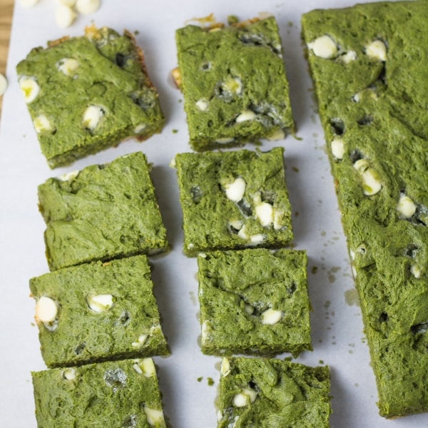

MATCHA BROWNIES

Matcha and brownies are a great combination for an irresistible treat.
Easy to bake with simple ingredients!
Perfect to eat anytime and can be made to be cakey or chewy.
Ingredients:
- Matcha powder
- Unsalted Butter
- All-purpose flour
- Baking powder
- Brown Sugar
- Eggs
- Vanilla Extract
- White Chocolate Chips
- Salt
How to make:
- Mix flour, matcha, baking powder, and salt in a bowl.
- Mix butter, brown sugar, 2 eggs in a separate bowl.
- Pour wet mixture into dry mixture and stir in white chocolate chips.
- Grease baking pan with butter and pour brownie mixture in.
- Decorate with white chocolate chips and walnut.
- Bake for 25 min at 320F.
- Let brownie cool for 30min - 1hr.
- Serve and enjoy!